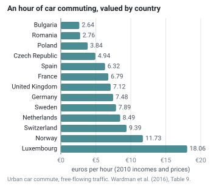

Part I · The objective · Module 2
Valuing time, access and choice
Term A of the welfare objective measures what a plan does for the people who travel. In most appraisals, the largest part of it is a single item: time saved, turned into money. This module shows how that is done, and where the choices hide. Which value is an hour worth? Whose hour? Do unreliable, crowded or cold minutes count more? And if people spend about the same time traveling every day, whatever we build, what are we really buying?
- The question
- How much is a faster, more reliable or more comfortable trip worth, and to whom?
- What matters
- The value of travel time turns minutes into money. In most appraisals, time savings are the largest benefit. Waiting, unreliability and crowding can matter as much as speed. Over decades, people use saved time to travel farther, so the lasting benefit is access, not time.
- Numbers to question
- The value of an hour: estimated values for a car commute differ about sevenfold across Europe, with income. Whether it rises with trip distance or differs by mode. The multipliers for waiting and crowding. Wider economic benefits, which raised Crossrail's benefit–cost ratio from 1.97 to 3.1. Time savings computed with a fixed number of trips.
- Levers
- The appraisal rules themselves: one value of time for everyone or values by income, distance and mode; whether walking, cycling, reliability and crowding are valued; whether the demand model lets trips and destinations respond.
- Ask your analysts
- What share of the benefits are time savings, and on whose trips? Would the ranking change with one value of time for everyone? How much comes from new trips and new destinations? What is the benefit–cost ratio with and without wider economic benefits?
- Explain what a value of travel time is, how it is measured, and why the official values of seven countries differ.
- Show with numbers how the choice of a value of time can change the ranking of two projects.
- Apply multipliers for waiting, unreliability and crowding.
- Compute user benefits with the rule of a half, explain where it comes from, and say when it fails and the logsum is needed.
- Explain wider economic benefits and option values, and the double-counting risks they bring.
- Use the constant travel-time budget to criticize "time savings", and say what it means for Term A.
1. Two projects, one budget
A regional council has money for one of two projects. The first widens a road between two towns 65 km apart. It saves 6 minutes on each of 20,000 car trips a day. The second gives buses and trams their own lanes in the city. It saves 6 minutes on each of 40,000 short trips a day.
Which project is better for the people who travel? Counted in hours, the answer is easy: the city project saves twice as many. But appraisals do not count hours. They count money. Every saved hour is multiplied by a value of travel time: the amount of money a traveler would give up to arrive an hour sooner. If that value is the same for every trip, the city project wins two to one. If an hour on a long car trip is worth more than an hour on a short bus ride, the answer can flip. Section 3 shows that it does, under official rules.
So the value of an hour is not a technical detail. It is one of the numbers that decide what gets built.
Generalized cost
A traveler weighs money, time and discomfort. Appraisal puts all three into one number, measured in money, called the generalized cost of a trip. It is the fare or fuel cost, plus the travel time multiplied by the value of time, plus money values for the other burdens: waiting, walking, changing vehicles, uncertainty about when one will arrive.
In formula form, for a way of traveling \(j\):
$$GC_j = c_j + \mathrm{VTTS}\cdot\Big(t^{\text{ivt}}_j + w_{\text{wait}}\,t^{\text{wait}}_j + w_{\text{walk}}\,t^{\text{walk}}_j + \text{transfer penalty}_j\Big) + \mathrm{VOR}\cdot\sigma_j .$$Here \(c_j\) is the money cost (fare, fuel, toll, parking). \(t^{\text{ivt}}_j\) is the in-vehicle time. VTTS is the value of travel time savings, in money per hour. The weights \(w\) say how much worse a minute of waiting or walking feels than a minute in the vehicle. \(\sigma_j\) measures how much the travel time varies from day to day, and VOR, the value of reliability, puts a price on that variation (section 4).
A project lowers generalized cost. The fall, multiplied by the number of trips, is the core of Term A in almost every national appraisal manual.
A behavioral value of time is what the people in a model actually trade off. It is used to predict choices, and it varies with income, purpose and conditions. An appraisal value of time is the number an appraisal manual prescribes for valuing benefits. Several countries deliberately make the appraisal value less differentiated than the behavioral one. Their main reason: so that a rich traveler's time does not count for more in the public budget than a poor traveler's time. Section 3 shows how.
2. Where values of time come from A
Nobody can observe what an hour is worth to a person. It has to be inferred. Three approaches are in use, and each has a history.
Three approaches
- The cost of producing the time. The oldest approach values an hour at what it costs: the wage for working time, plus the hourly cost of the vehicle. For business travel this is the cost-saving approach: an hour an employee no longer spends on the road is an hour of extra work, worth the gross wage plus the employer's other labor costs. Japan still values all trips this way. Most European countries use it for freight and professional drivers.
- Stated preference. Survey respondents choose between hypothetical trips that differ in time, cost and reliability, for example "25 minutes for €4 or 35 minutes for €2". A choice model then reads off how many euros they give up per minute saved. This is now the main method in Europe: national studies in the UK (2015), Sweden (2007/08), Germany (2013) and the Netherlands (2022) all used it.
- Revealed preference. The analyst observes real choices, for example between a tolled and a free route. These are closer to real behavior, but time and cost often move together, and the variation is small, so the value is hard to pin down.
The second and third approaches rest on the choice models of Module 1. A person's choices reveal how much one minute and one euro each count. The value of time is the ratio of the two. The box shows the step.
Under the hoodThe value of time as a ratio of two weights
A choice model gives each option \(j\) a measured utility \(V_{nj}\) for person \(n\). With travel time \(t\), money cost \(c\) and other qualities collected in a vector \(\mathbf{x}\), it reads
$$V_{nj} = \beta_t\, t_{nj} + \beta_c\, c_{nj} + \boldsymbol{\beta}_x^{\top}\mathbf{x}_{nj}.$$The weights \(\beta_t\) (per minute) and \(\beta_c\) (per euro) are both negative, because time and cost make an option less attractive. Module 4 shows how they are estimated from data.
We want the same quantity in money. One euro of cost changes utility by \(\beta_c\), so one unit of utility is worth \(1/(-\beta_c)\) euros. Write \(\lambda_n = -\beta_c\), the marginal utility of money. Dividing \(V\) by \(-\lambda_n\) turns utility into a cost in euros:
$$-\frac{V_{nj}}{\lambda_n} = c_{nj} + \frac{\beta_t}{\beta_c}\,t_{nj} + \frac{\boldsymbol{\beta}_x^{\top}\mathbf{x}_{nj}}{\beta_c}.$$This is the generalized cost. The factor in front of time is the value of time:
$$\mathrm{VTTS} = \frac{\beta_t}{\beta_c}.$$Example: a model estimates \(\beta_t = -0.03\) per minute and \(\beta_c = -0.15\) per euro. Then \(\mathrm{VTTS} = 0.03/0.15 = 0.2\) € per minute, or €12 per hour. The weights for waiting and walking come out the same way: they are ratios of the waiting or walking weight to the in-vehicle weight.
If \(\beta_c\) differs by income group, so does the value of time. A group with half the cost weight (money matters less to them) has twice the value of time. This is the source of the equity problem in section 3.
A rule of thumb that has held for decades
Across many countries, the values for commuting and leisure trips that come out of these surveys land at roughly a third of the gross hourly wage. A review of seven countries' official values found non-business values "varying around this figure of 30%" (Wardman, Chintakayala & de Jong, 2016, citing Mackie and colleagues, 2014). Business values are much higher, typically two to three times the non-work values, because they follow the employer's labor cost.
How business time is valued is itself a choice. The UK replaced the cost-saving approach with survey-based values in its 2015 study. Germany kept labor costs for business trips. The difference matters, because business trips are a small share of trips but a large share of benefits in many road schemes.
3. How countries set the value of time A
The table compares how seven countries derive the official values. Numbers are given only where we checked them in the official document. Currencies and price years differ, so do not compare the numbers directly. Convert them with purchasing-power parities and the right price index first.
| Country · document | Method (non-work) | Work / business | Differentiation | Example values (checked) |
|---|---|---|---|---|
| UK · DfT TAG Unit A1.3 (May 2026) and TAG Data Book | Stated-preference willingness to pay, national study by ITS Leeds and Accent (2015) | Willingness to pay since 2015 (replacing the cost-saving approach); freight and professional drivers from a 2023 study | Purpose (commute, other) and, for work, mode and distance. Non-work values are national averages by design (equity) | Values in the TAG Data Book (2010 prices and values). Sensitivity ranges: commute ±25 %, other non-work ±60 % |
| Germany · Methodenhandbuch zum BVWP 2030 (2016) (German) | Revealed- and stated-preference study by TNS Infratest and IVT, ETH Zürich (2013) | Labor-cost rates; the study's willingness-to-pay values were rejected because they were below average labor cost; 75 €/person-h above 500 km | Distance (a continuous function); same value for all modes on an origin–destination pair | Non-business, 2012 prices: 4.27 €/person-h at 5 km, 6.41 at 25 km, 9.18 at 65 km, 12.24 at 187.5 km, 15.54 beyond 600 km |
| Netherlands · KiM, New values of travel time, reliability and comfort (Dutch report Dec. 2023, English summary Apr. 2024) | Stated-preference survey by Significance (reference year 2022) | Survey-based; business values fell about 20 % after a method change | Mode and purpose; for the first time walking and cycling; comfort multipliers | €/h per person, 2022 prices incl. VAT: car 10.42 (commute 10.78, business 21.20, other 9.60); train 10.08; bus/tram/metro 7.12; cycling 11.84; walking 10.39. About 10–20 % lower than the 2010-based values |
| Sweden · Trafikverket ASEK 8.0/8.1 (2024–26) (Swedish) | National stated-preference study 2007 (WSP 2010; Börjesson & Eliasson 2012), uprated with real income | Wage-based (cost) values | Mode, regional vs. long-distance (100 km), purpose. Differences due to income must be removed (rule AR 9.2) | Values in the ASEK calculation annex (kalkylbilaga), not reproduced here |
| France · DGITM fiche-outil V.2, valeurs de référence (version 3 May 2019), following the Quinet report (2013) (French) | Meta-analysis of French studies, set by a government committee | Higher fixed values for "professionnel" | Urban vs. interurban; Île-de-France vs. rest; purpose; mode and distance for interurban trips | Urban, all modes, €2015/h: business 18.6 (Île-de-France 23.7), commute 10.6 (13.4), other 7.2 (9.3), unspecified 8.4 (11.4). Grows with GDP per head, elasticity 0.7 |
| United States · USDOT Revised Departmental Guidance on Valuation of Travel Time (2016), used in the BCA Guidance for Discretionary Grant Programs | Rule of thumb from wages: local personal travel at 50 % of median household income per hour, intercity personal travel at 70 % | 100 % of median gross compensation (wage plus benefits) | Purpose, local vs. intercity; walking, waiting and transfer time at twice the rate | Current dollar values are in the latest BCA guidance tables (updated yearly); we could not retrieve the 2025 PDF and do not quote them |
| Japan · MLIT 費用便益分析マニュアル (Cost–benefit analysis manual, Aug. 2025) (Japanese) | Resource value ("income approach", 所得接近法): opportunity cost of occupants' time at wage rates, plus vehicle opportunity cost (rental-car rate) and goods (value × interest) | Same approach, with fringe benefits added | Per vehicle by vehicle class; regions may set their own values if published | Yen per minute per vehicle, 2024 prices: car 43.74; bus 386.79; light goods 52.07; heavy goods 101.93 |
Three things stand out. First, Japan values vehicles, Europe values people. The MLIT value is per vehicle-minute, so a minute saved for a full bus is worth nearly nine car-minutes. The method is the cost of producing the time, not willingness to pay. Second, Germany makes the value rise with distance and applies it identically to all modes on a route. This avoids the oddity that a traveler's time changes value when they switch from car to train. Third, the Netherlands is the only country here with an official value for walking and cycling time. Elsewhere, time saved by people on foot or on bikes tends to be valued at a generic rate or ignored, which biases appraisal against them.
本マニュアルで示している原単位のうち、時間価値原単位については、人・車両・貨物の時間価値を用いて算出している。貨物の時間価値については、貨物の価値額に単位時間あたりの金利を乗じることにより算出しているが、貨物輸送の実態を必ずしも反映できていない点に留意が必要である。
"Among the unit values shown in this manual, the time-value unit is calculated from the time values of persons, vehicles and goods. The time value of goods is calculated by multiplying the value of the goods by the interest rate per unit of time; note that this does not necessarily reflect the reality of freight transport."
Source: MLIT Road Bureau and City Bureau, 費用便益分析マニュアル, August 2025, §1(3). Translated by the course authors (machine-assisted).
How far apart are countries?
Official values are hard to compare, because each country measures something slightly different. A large European study did the comparison for us. Mark Wardman, Phani Chintakayala and Gerard de Jong pooled 3,109 values of time from 389 European studies, conducted between 1963 and 2011. From them they estimated what an hour is worth in each country, for the same kind of trip, in the same currency and price year.

An hour of commuting is worth about €2.60 in Bulgaria and about €18 in Luxembourg, a factor of seven. The study found that the values rise almost in proportion to income per head, measured at purchasing-power parity. That is why most manuals let the value of time grow over the years with income. France, for example, lets it grow by 0.7 % for every 1 % growth in GDP per head.
For a decision maker, this has two consequences. A time-saving project scores far higher in a rich country or region than the same project in a poor one, simply because the hours are priced higher. And a road appraised over 40 years gains automatically as incomes rise, because each future minute is priced higher than today's.
What the choice does to a ranking
Back to the council and its two projects. The table values them with three official rules. Within each column, the two projects are valued with the same rule, so the ratio between them is meaningful. Across columns, price years differ, so compare rankings, not euros.
| Hours saved per day | One value for all (€10/h) | Germany: value rises with distance (2012 prices) | Netherlands: value by mode (2022 prices) | |
|---|---|---|---|---|
| Road: 20,000 car trips of 65 km, 6 min each | 2,000 | €20,000 | €18,360 (at €9.18/h) | €20,840 (car, €10.42/h) |
| City: 40,000 bus and tram trips of 5 km, 6 min each | 4,000 | €40,000 | €17,080 (at €4.27/h) | €28,480 (bus/tram/metro, €7.12/h) |
| Winner | City, 2 : 1 | City, 2 : 1 | Road, by 7 % | City, by 37 % |
The same two projects, the same minutes saved, and the ranking flips. Under the German rule, an hour on a 65 km trip is worth more than twice an hour on a 5 km trip, which outweighs the city project's twice-as-many hours. Under the Dutch rule, a bus minute is worth less than a car minute, but not enough to flip the result.
Each rule has a defensible reason. Long-distance travelers do state higher values in surveys. Bus users do have lower incomes on average. But a council that adopts one of these rules has also, without saying so, chosen which kinds of trips its budget favors.
Whose hour? The equity choice
In surveys, people with higher incomes state higher values of time. If appraisal used those values directly, a minute saved for a manager would count more than a minute saved for a cleaner. Two countries explicitly refuse this. Sweden's appraisal guidance, ASEK, published by the national transport administration Trafikverket, states the rule plainly.
Om betalningsviljan för att slippa restid skiljer sig mellan färdmedel ska endast de skillnader som inte beror på skillnader i inkomstnivå beaktas. Differentierade tidsvärden ska därför justeras så att de inte speglar olika gruppers betalningsförmåga.
"If the willingness to pay to avoid travel time differs between modes, only those differences not due to differences in income level shall be taken into account. Differentiated time values shall therefore be adjusted so that they do not reflect different groups' ability to pay."
Source: Trafikverket, ASEK 8.0 (2 April 2024), recommendation AR 9.2. Translated by the course authors (machine-assisted).
The UK reaches the same result by another route. Its official Transport Analysis Guidance (TAG), in unit A1.3, states that if appraisal used behavioral values related to income, "investment decisions will be biased toward those measures which benefit travelers with higher incomes". It therefore prescribes national average values for non-work trips. In the language of Module 1, this is a hidden choice of equity weights. Using one value of time for everyone is the same as giving each income group a weight that offsets its higher or lower willingness to pay. Module 14 compares how far other countries go.
4. Reliability, waiting and crowding A
A commuter who knows the train takes 30 minutes can leave 35 minutes before work. A commuter whose train takes 30 minutes on average, but sometimes 45, must leave earlier, or risk being late. Both have the same average travel time. The second is clearly worse off. Appraisal manuals now value three such burdens beyond the average minute: unreliability, waiting and crowding.
Reliability
The common approach measures unreliability by the standard deviation of travel time, \(\sigma\): how far a typical day is from the average. It values one minute of standard deviation as a fraction of an average minute. That fraction is the reliability ratio, \(\mathrm{RR}=\mathrm{VOR}/\mathrm{VTTS}\). The change in generalized cost from a change in reliability is then
$$\Delta GC_{\text{rel}} = \mathrm{RR}\cdot \mathrm{VTTS}\cdot\Delta\sigma .$$The UK's TAG recommends \(\mathrm{RR}=0.4\) for car and non-freight van trips, 0.58 for heavy goods vehicles and 0.7 for freight vans. The Dutch 2022 study found lower reliability ratios than before for all modes. Germany's federal transport infrastructure plan (BVWP) has a separate benefit component for reliability (\(N_Z\)) that relates the spread of delays to how full the road is. France publishes a dedicated tool sheet on fiabilité des temps de déplacement.
Reliability benefits are largest for projects that relieve bottlenecks close to capacity. There, a small disturbance can cause a long queue, so some days are much worse than average (Module 7). They are also large for rail and bus measures that keep services on time. An appraisal that values only average minutes will undervalue both.
Walking, waiting and transfers
TAG weights waiting time for public transport by 2. It applies the same factor to walking and cycling time when reaching a station or changing between modes. USDOT also values waiting and transfer time at twice the in-vehicle rate. The multiplier rests on a European review by Wardman and co-authors (2013) that pooled the results of many studies, cited in TAG.
The consequence is practical. A bus improvement that halves the time between buses from 20 to 10 minutes cuts the expected wait by about 5 minutes, if passengers arrive at random. At twice the in-vehicle rate, that is worth about 10 in-vehicle minutes. It is often more than a bus lane saves.
Crowding
Crowding is a multiplier on in-vehicle time that rises with how full the vehicle is. The Dutch 2022 values range from 0.93 for sitting in a quiet train to 2.29 for standing in a very busy train. TAG refers rail appraisal to the industry's Passenger Demand Forecasting Handbook. For other modes, TAG says the evidence is not yet robust enough to set values.
Crowding values make public-transport capacity valuable even when it saves no time. They also show that an "average" value of time undervalues time spent in bad conditions, which mostly affects public-transport users. Crowding that passengers impose on each other is counted here, in Term A, through these multipliers. It is not a separate cost in Term C (Module 1).
5. Consumer surplus and the rule of a half A
In 1844 Jules Dupuit, an engineer in France's Corps des Ponts et Chaussées, asked how to measure the usefulness of public works. His example was a bridge with a toll. The toll revenue, he argued, understates what the bridge is worth. Many people who cross would pay more than the toll if they had to. Their extra benefit is real, even though no one collects it.
Dupuit measured the usefulness as the area under the demand curve, above the price people pay. Alfred Marshall later named this area consumer surplus. Dupuit drew a striking conclusion: public welfare would be greatest with no toll at all. A toll only moves money from users to the bridge owner. But it also deters people who value a crossing at less than the toll, and their lost benefit is gained by no one. This is the same reason why, in Module 1, revenue is not a benefit. Dupuit went on to supervise the building of the Paris sewer system.
Sources: J. Dupuit, "De la mesure de l'utilité des travaux publics", Annales des ponts et chaussées, 2nd series, vol. 8 (1844), English translation by R. H. Barback in International Economic Papers 2 (1952); "Jules Dupuit", Wikipedia.
Every transport appraisal manual still uses Dupuit's measure. Picture all the trips between two places, lined up by how much each traveler would be willing to pay for the trip. That line is the demand curve. When a project lowers the generalized cost of the trip from \(P_0\) to \(P_1\), two groups gain:
- Existing travelers gain the full saving, \(P_0 - P_1\), on each of their \(T_0\) trips.
- New travelers, who did not make the trip before, gain less. The first of them almost made the trip anyway, so gains nearly the full saving. The last of them was only just tempted, so gains almost nothing. On average, a new traveler gains about half the saving.
Adding the two gives the rule of a half, with \(T_1\) the number of trips after the project:
$$\Delta CS \;\approx\; T_0\,(P_0-P_1) + \tfrac12\,(T_1-T_0)(P_0-P_1) = \tfrac12\,(T_0+T_1)(P_0-P_1).$$The rule is exact if the demand curve is a straight line between the two points. TAG A1.3 writes it in exactly this form, and every national manual in this module uses it in some variant.
A bus corridor carries \(T_0=10\,000\) trips per weekday at a generalized cost of €12.00. A bus-priority scheme cuts the generalized cost to €10.00, through shorter in-vehicle time plus a 5-minute reduction in waiting, valued at twice the value of time. The demand model predicts \(T_1=11\,000\) trips.
- Existing users: \(10\,000\times 2.00 = \) €20,000 per day.
- New users: \(\tfrac12\times 1\,000\times 2.00 = \) €1,000 per day.
- Total \(\Delta CS = \tfrac12(10\,000+11\,000)\times2.00 = \) €21,000 per day, or about €5.25 million per year with 250 equivalent days.
Three warnings.
- Fares are transfers. Suppose the same €2.00 came from a fare cut instead of faster buses. The users' gain is computed the same way. But the €20,000 that existing riders no longer pay is €20,000 less revenue in Term E. The two cancel. What remains is the gain of the 1,000 new riders, minus the cost of carrying them. If public money is dearer than private money (the factor \(\mu\) of Module 1), the fare cut even loses a little on the transfer.
- Perceived costs only. The €2.00 is the cost travelers perceive. If the operator's costs fall but fares stay the same, that gain belongs to the operator (Term E), not here.
- Other markets. If some new bus riders left their cars, the remaining drivers may face less congestion. That is a separate user benefit on the road, computed with its own rule of a half and counted in Term A. It must not be counted again as an "external" benefit in Term C.
Where the rule of a half fails
- New modes or destinations. If an option did not exist before, it had no "before" cost. The rule cannot be applied. One needs the logsum (section 6) or an assumed "choke price" at which nobody would use the option.
- Large changes where demand is far from a straight line, for example a new high-speed rail line that halves travel time.
- Qualities that are not in the generalized cost. Comfort, image and the hidden reasons people prefer one mode are not measured in minutes or euros. Germany's BVWP 2030 added a benefit component for implizite Nutzen (implicit benefits) to handle exactly this.
Diese neu in den BVWP 2030 aufgenommene Nutzenkomponente berücksichtigt beispielsweise für den Personenverkehr den Umstand, dass Entscheidungen von Verkehrsteilnehmern bei optional zur Wahl stehenden Mobilitätsoptionen nicht allein auf Basis von Reisezeit- und Kostenvergleichen getroffen werden.
"This benefit component, newly included in the BVWP 2030, takes into account, for example in passenger transport, the fact that road users' decisions between available mobility options are not made solely on the basis of comparisons of travel time and cost."
Source: Methodenhandbuch zum Bundesverkehrswegeplan 2030, section 4.2.2.6, Veränderung der Impliziten Nutzen (NI). The handbook adds that this allows induced and diverted traffic to be treated consistently. Translated by the course authors (machine-assisted).
In Module 1 terms, the implicit benefit captures the part of a mode's appeal that is not time or cost. It is a step from "time savings" toward the full logsum.
6. The logsum in appraisal A
Module 1 introduced the logsum: the value of the whole set of options a person has, counting the chance that any of them suits them best on a given day. Module 4 derives it. This section covers what an appraisal team needs to know to use it.
Logsum or rule of a half?
For a change in the time or cost of an existing option, the two give almost the same answer. In Module 1's worked example, a bus lane is worth €1.61 per traveler by the logsum and €1.62 by the rule of a half. The rule of a half is a straight-line version of the logsum, and for moderate changes a straight line is close enough.
They part ways when the set of options changes. Continue Module 1's example: car and improved bus, with measured utilities \(-1.0\) and \(-1.5\), and one point of utility worth €10. Now a safe cycle route opens, with measured utility \(-2.5\).
- Before the route: logsum \(\ln(e^{-1}+e^{-1.5}) = \ln(0.368+0.223) = -0.526\).
- After: \(\ln(0.368+0.223+0.082) = \ln 0.673 = -0.396\).
- Gain: \(0.130\) points, or €1.30 per traveler per trip. Only 12 % of travelers choose the bike, but all of them gain, because the option is there on the days it suits them.
The rule of a half cannot compute this, because the bike route had no "before" cost. An appraisal that uses only the rule of a half will therefore miss most of the value of new options: a new bus line, a new bridge for pedestrians, a new destination within reach. The logsum is the right tool whenever a plan adds or removes options, or when demand can change destination as well as mode.
Practical points for an appraisal team
- Same model, both scenarios. Compare logsums only from one and the same model, run with and without the project. A re-estimated or re-specified model changes the logsum for reasons that have nothing to do with the project.
- Watch the constants. Choice models contain a constant for each mode that captures its hidden appeal, such as a "rail bonus". If a project changes a constant, for example by assuming a new tram is more attractive than a bus, that assumption turns directly into benefits. Report such benefits separately, because they are the least well supported part of the model.
- Use the top of the tree. Many models are nested: the choice of destination sits above the choice of mode, which sits above the choice of route (Module 4). The welfare measure is the logsum at the top, which contains all the levels below.
- Income groups. If the model has a different cost weight for each income group, compute the gain for each group separately and convert it to money with that group's own value. Then decide, openly, how to add the groups up (section 3).
- Destinations count. With destination choice, adding jobs or shops near people raises the logsum, just as a faster road does. A land-use plan and a road plan are then valued in the same currency (Module 5).
Under the hoodThe logsum formula for appraisal, with nests and income groups
For person \(n\) with options \(j\) in choice set \(C_n\), measured utilities \(V_{nj}\) and marginal utility of money \(\lambda_n\), the change in consumer surplus between plan 0 and plan 1 is
$$\Delta CS_n = \frac{1}{\lambda_n}\left[\ln\sum_{j\in C_n^1} e^{V^1_{nj}} - \ln\sum_{j\in C_n^0} e^{V^0_{nj}}\right].$$The choice set may differ between the plans, which is how new options enter. The review by de Jong, Daly, Pieters & van der Hoorn (2007) sets out the conditions. The measure is exact if \(\lambda_n\) does not depend on income within the range of the change, that is, if there is no income effect on choice.
Why the rule of a half approximates it: the derivative of the logsum with respect to the generalized cost of option \(j\) is \(-P_{nj}\), the probability of choosing \(j\). Integrating the probability over a small change in cost, with the probability taken as a straight line between before and after, gives the rule of a half.
Nests. In a nested model with nests \(k\) and nest parameters \(\mu_k\), the welfare measure is the top-level logsum \(\ln\sum_k e^{\mu_k I_k}\), with \(I_k\) the logsum within nest \(k\) (Module 4, "IIA and nested logit").
Income groups. With group-specific \(\lambda_g\), compute \(\Delta CS_n\) per group with that group's \(\lambda_g\). The unweighted sum, \(\omega_g=1\) in Module 1's notation, gives more weight to groups with a low \(\lambda_g\), that is, to higher incomes. Using one common \(\lambda\) for everyone is the logsum version of a national-average value of time.
Option values
A rural railway line used by few people may still be valued by many residents who might use it: when the car breaks down, when they can no longer drive, or for their children. Economists distinguish
- option value: willingness to pay to keep an alternative available, over and above the expected benefit from using it;
- non-use values: the value people place on a service they do not expect to use, for example because others need it.
A review by Laird, Geurs & Nash (2009) discusses these values in rail appraisal, where they are most often invoked to resist closures. The logsum already contains part of the option value: every person has some probability of using the train, so removing it lowers everyone's expected surplus. What it does not contain is insurance against future changes, such as losing the car, or a value for other people's access. Treat claimed option values beyond the logsum as a sensitivity test, not a core benefit. The more defensible route is an explicit minimum level of access for people without a car, one of the limits of Module 1.
7. Wider economic benefits
User benefits measure what travelers gain. In an economy where every market works perfectly, that is all there is. Lower transport costs pass through to firms, workers and landowners as lower prices, higher wages and higher rents. Counting those as well would count the same gain twice.
Real economies have market failures, and some of them make part of a transport benefit additional. The UK's TAG Unit A2.1 recognizes three:
- Agglomeration. Firms are more productive when they are close, in travel time and cost, to many other firms and workers. They share suppliers, find better-matched staff and learn from each other. None of this enters a traveler's choice, so a project that brings firms "closer" raises output beyond the user benefit. Anthony Venables (2007) set out the theory for urban transport.
- Imperfect competition. Where firms charge more than their marginal cost, extra output is worth more than its cost.
- Labor supply and tax. When commuting gets cheaper, more people take jobs. Part of their extra earnings goes to the government as income tax, which the commuter does not count.
The amounts can be large. Crossrail, the east–west railway under London that opened in 2022 as the Elizabeth line, had a benefit–cost ratio of 1.97 in its 2011 business case. Including wider economic benefits raised it to 3.1 (National Audit Office, 2014). For a project at the margin of approval, a step of that size decides the outcome.
Other traditions are more cautious. Germany's BVWP and Japan's MLIT manual leave agglomeration out of the core benefit–cost ratio. The French référentiel has a tool sheet on effects on the location and level of economic activity. Two cautions apply everywhere. Agglomeration benefits are largest in already dense, rich areas, which adds to the regional bias of time savings (section 3). And the productivity effects are uncertain enough to turn a weak project into an apparently strong one. Report them separately, with and without, as Module 1 recommends.
8. Critique: do transport projects really save time?
The constant travel-time budget
Yacov Zahavi's work in the 1970s and Cesare Marchetti (1994) drew attention to a striking regularity. Averaged over a population, the time spent traveling per person per day is roughly constant, at about an hour. It is similar across cities, countries and decades, even as speeds rose from walking to motorways. What changes with speed is distance. Faster travel lets cities spread, people commute farther and shop at more distant stores.
The "Marchetti constant" is an empirical regularity, not a law. Travel-time budgets differ between groups and have drifted in some surveys. But the aggregate evidence is strong enough that David Metz (2008) called the travel time saving a "myth": in the long run, the time saved is spent traveling farther.
What this means for Term A
- The benefit is real but mislabeled. If travelers use saved time to reach better destinations (a better-matched job, cheaper housing, a larger choice of schools), they are better off. The benefit is access, not time. A logsum computed with destination choice and land-use response captures it. A time-savings calculation on a fixed set of trips measures the right thing only by accident.
- Time savings with a fixed number of trips overstate benefits. Under fixed demand, the predicted time savings on existing trips are counted for 40–60 years. If extra traffic erodes the speed gain within a few years (the "fundamental law" of road congestion, Module 5), the true benefit is mainly the surplus of the new trips, which by the rule of a half is much smaller. The harm those extra trips cause (Term C) and the land they need (Term D) are not counted at all.
- The benefit ends up in land prices. Over decades, better access raises land rents in the places that become accessible. Counting both user benefits and land-value uplift counts the same gain twice. Counting land-value uplift instead is an alternative measure, used implicitly when Japanese railways fund themselves through property development.
- It strengthens the case for accessibility measures. If time spent is constant, the useful question is how many opportunities can be reached in that hour. That is the logsum, or its simpler relative, counting jobs within reach (Module 5).
The constant budget is an aggregate, long-run regularity. Individual small time savings are real in the short run. Both Germany's BVWP and Sweden's ASEK explicitly decided to value small savings in full rather than discount them. The defensible conclusion is not "time savings are zero". It is that Term A should be computed with a model in which demand and destinations can respond, and that time savings computed with fixed demand should be labeled an upper bound.
9. Connecting back to \(W\)
| Practice | What it does to Term A | Bias relative to \(W\) |
|---|---|---|
| Fixed-demand time savings × value of time | Values only time on existing trips | Overstates road capacity benefits; ignores new destinations and modes |
| Rule of a half with variable demand | Straight-line approximation to the logsum | Fails for new options and large changes |
| Logsum from an equilibrium demand model | Consumer surplus of the whole set of options | Only as good as the model's responses, constants and choice set |
| National-average ("equity") value of time | Same value of an hour for everyone | An implicit equity weight; favors low-income groups relative to behavioral values |
| Value rising with distance (Germany) | Long trips' minutes count more | Favors long-distance and interurban projects over urban ones |
| No value for walking and cycling time | Active-mode time and comfort omitted | Biases against active modes (the Netherlands is now an exception) |
| Per-vehicle values (Japan) | Occupancy built into the vehicle class | Fine for roads; makes cross-modal comparison harder |
| Wider economic benefits in the core ratio | Adds productivity gains beyond user benefits | Risk of double counting; favors dense, rich regions |
A mode-choice model estimated on commuters gives a cost weight \(\beta_c=-0.20\) per euro for low-income and \(-0.10\) per euro for high-income travelers, and a time weight \(\beta_t=-0.04\) per minute for both.
- Compute the behavioral value of time of each group in €/h.
- A road scheme saves 6 minutes for 2,000 high-income and 500 low-income commuters per day. Compute daily benefits with (a) group-specific values and (b) a single average value weighted by the number of travelers.
- A bus scheme saves 6 minutes for 500 high-income and 2,000 low-income commuters. Repeat. How does the ranking of the two schemes depend on the choice of value? Which country practice in section 3 corresponds to (b)?
A household chooses among three destinations with \(V_j=\beta_t t_j+\ln O_j\), \(\beta_t=-0.05\) per minute, \(\lambda=0.1\) per euro. Destination A: \(t=20\) min, \(O=1000\) jobs. B: \(t=40\), \(O=4000\). C: \(t=60\), \(O=8000\).
- Compute choice probabilities, the logsum and the average travel time.
- A new road cuts travel time to C to 40 minutes. Recompute. What happens to the average travel time? What is \(\Delta CS\)?
- Explain the result in the language of the constant travel-time budget.
- Compare with the "time savings" a fixed-matrix appraisal would report if it held the old destination shares fixed.
A rail upgrade does not change the mean travel time (30 min) but reduces the standard deviation from 8 to 4 minutes. It also moves the typical commuter from "standing, busy" (multiplier 2.0) to "seated, average" (1.0). With a value of time of €11/h and a reliability ratio of 0.4, compute the change in generalized cost per trip. Which component dominates? What would a pure "time savings" appraisal conclude?
Return to the two projects of section 3. (a) At what ratio between the value of an hour on the 65 km trip and on the 5 km trip are the two projects equal? (b) Suppose both projects cost the same and only one can be built. Write three questions you would put to the consultant before accepting either ranking. (c) Over a 40-year appraisal, values of time grow with income. Does that change the ranking? Why or why not?
Readings and resources
- DfT — TAG Unit A1.3: User and Provider Impacts (May 2026) The clearest official text on consumer surplus, the rule of a half, working and non-working values of time, multipliers and reliability ratios.
- DfT — TAG Data Book The UK values themselves (spreadsheet), updated several times a year.
- DfT — Values of travel time savings: updating the values for non-work travel The research behind the 2015 UK values.
- KiM — New values of travel time, reliability and comfort in the Netherlands (2024) The newest national study in this course; includes walking, cycling and crowding multipliers; Significance technical report attached.
- Wardman, Chintakayala & de Jong (2016) — Values of travel time in Europe: review and meta-analysis 3,109 values from 389 studies; country-by-country values and their link to income. Free accepted manuscript.
- BMV — Methodenhandbuch zum Bundesverkehrswegeplan 2030 (German) Section III.3.1.2 on time values, section 4.2.2.6 on implicit benefits. 450+ pages; use the table of contents.
- Trafikverket — ASEK report and calculation annex (Swedish) Chapter 9 on travel time, with explicit reasoning on income effects and small time savings.
- DGITM — Fiche-outil V.2: valeurs de référence prescrites (French) French time values by purpose, region, mode and distance, with the safety and carbon values used in Module 3.
- MLIT — 費用便益分析マニュアル (August 2025) (Japanese) Short and explicit: the travel-time benefit formula and per-vehicle time values on pages 6–7.
- USDOT — Revised Departmental Guidance on Valuation of Travel Time in Economic Analysis The US wage-share approach.
- DfT — TAG Unit A2.1: Wider Economic Impacts How the UK values agglomeration, labor supply and output effects.
- National Audit Office — Crossrail (2014), summary A short official account of a business case with and without wider economic benefits.
- de Jong, Daly, Pieters & van der Hoorn (2007) — The logsum as an evaluation measure Theory and practice of the logsum as consumer surplus.
- Metz (2008) — The myth of travel time saving, Transport Reviews The critique of section 8, argued from the constant travel-time budget.
- Marchetti (1994) — Anthropological invariants in travel behavior Origin of the "Marchetti constant".
- Venables (2007) — Evaluating urban transport improvements: cost–benefit analysis in the presence of agglomeration and income taxation The theory behind wider economic benefits.
- MIT OCW 1.201J — Transportation Systems Analysis: Demand and Economics Free lecture notes on discrete choice and consumer surplus.
- Small & Verhoef — The Economics of Urban Transportation (Routledge, 2007) Chapters on demand and on the value of time and reliability.
- Train — Discrete Choice Methods with Simulation (2nd ed., Cambridge University Press, 2009) Section 3.5 derives the logsum as consumer surplus. The author also offers a free online version.